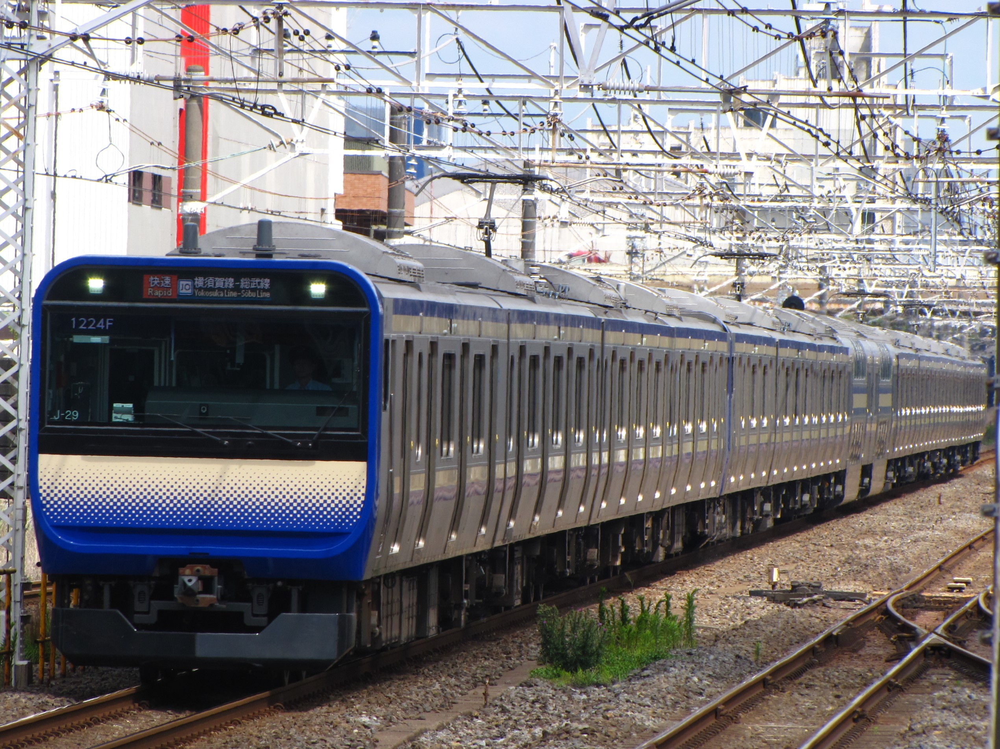
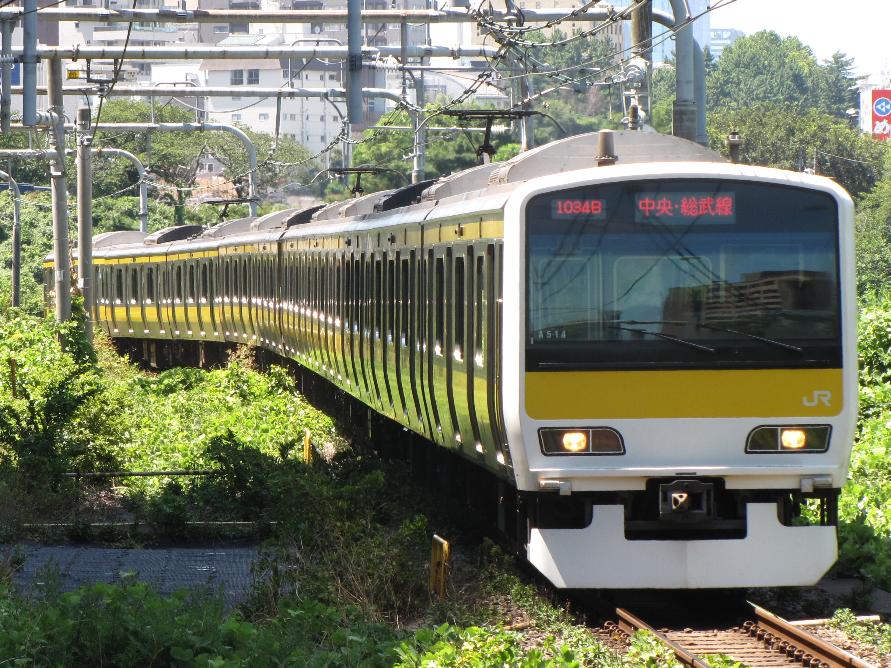
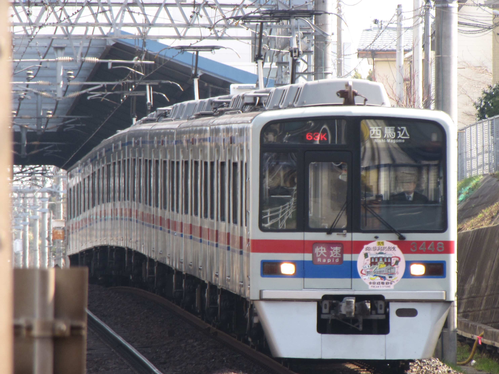
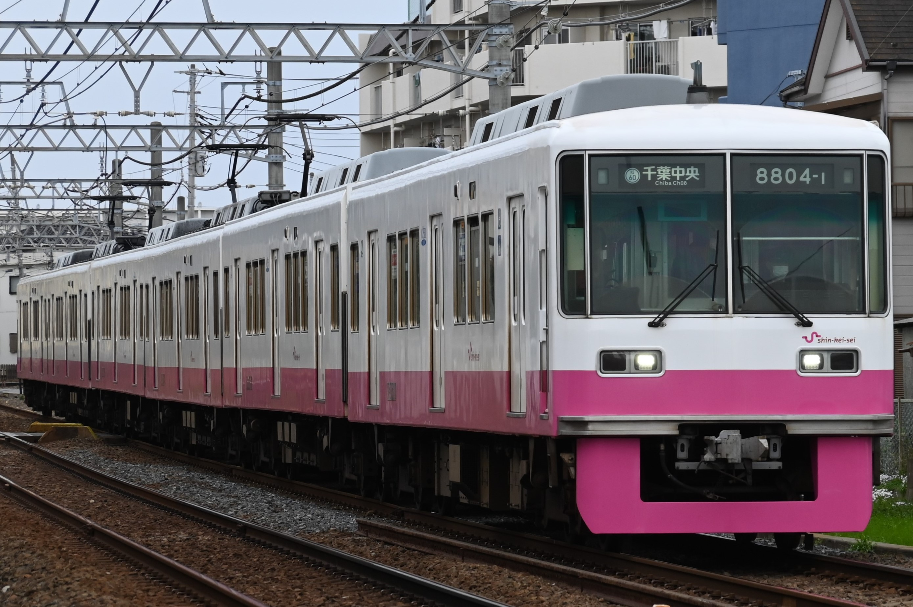

このページでは津田沼から都心への交通手段をご紹介‼

総武快速線は錦糸町や東京駅、さらには横浜駅まで乗り換えなしの総武線。錦糸町駅まで20分!東京駅まで約30分で、朝夕は始発もあって座れます。
中央・総武線各駅停車は秋葉原駅や新宿駅へ乗り換えなし！ディズニーリゾート最寄り駅舞浜駅に停まる京葉線との乗り換え駅の西船橋にも停まります。朝夕は門前仲町・日本橋方面東京メトロ東西線にも直通!始発もあって座れます。
京成線は京成上野駅や都営浅草線にも直通し浅草・新橋まで一本で！成田空港や千葉方面にも乗り換えなし！
新京成線は松戸や習志野・鎌ヶ谷まで京成津田沼から始発で座って乗り換えなし！